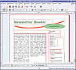

Edubuntu Programme
Zum Verständnis dieses Artikels sind folgende Seiten hilfreich:
Inhaltsverzeichnis
Die Edubuntu-Anwendungen sind in vier Metapakete unterteilt. Im folgenden sind alle darin enthaltenen Programme aufgelistet und kurz beschrieben. Natürlich kann man eine gewünschte Anwendung auch einzeln installieren, falls man kein komplettes Metapaket benötigt.
Die folgenden Metapakete stehen zur Verfügung:
ubuntu-edu-preschool (Vorschule - Enthaltene Anwendungen)
ubuntu-edu-primary (Grundschule - Enthaltene Anwendungen)
ubuntu-edu-secondary (Unter- / Mittelstufe - Enthaltene Anwendungen)
ubuntu-edu-tertiary (Oberstufe - Enthaltene Anwendungen)
 mit apturl
mit apturl
Paketliste zum Kopieren:
sudo apt-get install ubuntu-edu-preschool ubuntu-edu-primary ubuntu-edu-secondary ubuntu-edu-tertiary
sudo aptitude install ubuntu-edu-preschool ubuntu-edu-primary ubuntu-edu-secondary ubuntu-edu-tertiary
Anwendungen¶
Astronomie & Geographie¶
| Astronomie & Geographie | |||
| Anwendung | Beschreibung | Paketname | Bildschirmfoto |
| Celestia | Celestia ist ein Programm, mit dem man sich virtuell durch das Weltall bewegen und andere Planeten, Sterne und Galaxien besuchen kann. | celestia-gnome | |
KStars  | KStars ist ein Programm, welches einen künstlichen Sternenhimmel auf dem Desktop erzeugt. Nachdem die Basisdaten eingegeben und Erweiterungen heruntergeladen worden sind, kann man mittels des Desktop-Planetariums Sterne, Planeten, die Sonne, den Mond und tausende Kometen und Planetoide lokalisieren, um sie ggf. mit dem eigenen Teleskop zu beobachten. | kstars | |
| Marble | Marble ist ein Desktop Globus. Das Programm ähnelt dem populären Programm Google Earth. Es ist schlicht gehalten, trotzdem durchaus ausgereift und mächtig. Es unterstützt verschiedene Kartenmaterialien, u.a. OpenStreetMap und kann diese auf einem Globus oder einer Landkarte abbilden. | marble | |
| Stellarium | Stellarium ist eine freie Planetarium-Software. | stellarium | |
Chemie¶
| Lernprogramme Chemie | |||
| Anwendung | Beschreibung | Paketname | Bildschirmfoto |
| Kalzium | Kalzium erlaubt anhand eines Periodensystems die Erforschung der Elemente. Es ist sehr umfangreich, bspw. lässt sich nachvollziehen, ab welcher Temperatur sie den Aggregatzustand wechseln, jedes Element lässt sich mit Hilfe dieses Programms als Bohrsches Atommodell anzeigen oder es lassen sich Informationen zum Alpha- und Beta-Zerfall oder der Atommasse abrufen. | kalzium | |
| Melting | Mit Melting kann die Entropie, Enthalpie und der Schmelzpunkt der Helixspiralen von doppel Nukleinsäuremolekülen berechnet werden. Möglich sind die Kombinationen DNS/DNS, DNS/RNS und RNS/RNS. | melting | - |
| RasMol | Mit RasMol kann man Makromoleküle (bspw. Proteine, Nukleinsäuren, etc.) grafisch darstellen. | rasmol | |
Grafik und Konstruktion¶
| Grafik- und Konstruktionsanwendungen | |||
| Anwendung | Beschreibung | Paketname | Bildschirmfoto |
| Dia | Dia ist ein Diagrammeditor, welcher eine Vielzahl von Möglichkeiten zur Verfügung stellt, um ansprechende Diagramme zu erstellen. Neben der Möglichkeit, die Objekte frei zu platzieren und zu skalieren, können Grafiken eingebunden werden. | dia-gnome oder dia | |
| FreeMind | FreeMind ist ein Programm zur Erstellung von Mindmaps. | freemind (bis Ubuntu 11.10) | - |
| GnuPaint | GnuPaint ist ein simples Malprogramm, welches auf xpaint basiert. | gpaint | |
| Inkscape | Inkscape ist ein Vektorgrafik-Programm ähnlich Adobe Illustrator, FreeHand, Corel Draw oder Xara X. Die Anwendung bietet eine sehr benutzerfreundliche Oberfläche, die trotz der vielen Funktionen intuitiv und übersichtlich bleibt. | inkscape | |
| Pencil | Mit Pencil kann man traditionelle handgemalte Animationen (Cartoons) erstellen. Es werden sowohl Bitmap- als auch Vektorgrafiken unterstützt. | pencil | - |
| Tux Paint | Tux Paint ist ein einfaches Malprogramm für kleine Kinder. Mittels Stempel, Pinsel usw. können Bilder gemalt werden. | tuxpaint | |
| VYM | VYM (View Your Mind) ist eine einfach zu bedienende Anwendung zur Erstellung von Mind Maps. | vym (bis Ubuntu 10.04) | |
Mathematik¶
| Lernprogramme Mathematik | |||
| Anwendung | Beschreibung | Paketname | Bildschirmfoto |
| GeoGebra | GeoGebra ist eine freie Geometriesoftware, mit der mathematische Objekte aus Geometrie, Algebra und Analysis gezeichnet werden können. | geogebra (bis Ubuntu 11.10) | - |
| KAlgebra | KAlgebra ist ein mathematisches Rechenprogramm. Grundlage bildet die Sprache Content MathML, mit der man die Struktur einer Formel beschreiben kann. Es können arithmetische und logische Operationen ausgeführt und zwei- sowie dreidimensionale Graphen dargestellt werden. | kalgebra | |
| KBruch | KBruch ist ein Programm, mit dem Bruchrechnung (Bruchaufgaben, Vergleichen und Faktorisieren) geübt werden kann. Der Schwierigkeitsgrad der Aufgaben lässt sich dem Wissensstand anpassen. Neue Aufgaben können hinzugefügt werden. | kbruch | |
| Kig | Kig ist ein Geometrieprogramm. Mathematische Figuren und Konzepte können interaktiv entdeckt werden. | kig | |
| KmPlot | KmPlot ist ein Programm zur grafischen Darstellung von mathematischen Funktionen. | kmplot | |
| Lybniz | Lybniz ist ein simples Programm zum grafischen Darstellen von mathematischen Funktionen. | lybniz | - |
| Tux, of Math Command | Tux, of Math Command, auch bekannt als TuxMath, ist ein Mathetrainer, mit dem die Grundrechenarten geübt werden können. Das Spielprinzip basiert auf dem Arcade-Klassiker Missile Command. Zusammen mit Tux muss man Städte durch das Lösen mathematischer Aufgaben vor der Zerstörung retten. | tuxmath | |
| XaoS | XaoS ist ein Programm, welches Fraktalgrafiken in Echtzeit erstellt. | xaos | |
| Yorick | Yorick ist eine Interpretersprache für wissenschaftliche Simulationen und Berechnungen. | yorick (ab Ubuntu 11.04) | - |
Physik¶
| Physik | |||
| Anwendung | Beschreibung | Paketname | Bildschirmfoto |
| Light Speed! | Light Speed ist ein auf OpenGL basierendes Programm, das die Effekte der Relativitätstheorie auf ein sich schnell bewegendes Objekt illustriert. | lightspeed | - |
| Step | Step ist eine sehr umfangreiche, interaktive Physiksimulationsanwendung. | step | |
Spiele¶
| Spiele | |||
| Anwendung | Beschreibung | Paketname | Bildschirmfoto |
| Atomix | Atomix ist ein Spiel, in dem es darum geht, vorgegebene Moleküle aus einzelnen Atomen zusammenzusetzen. Das Spielprinzip basiert auf dem AMIGA-Spiel Atomix. | atomix | |
| blinKen | blinKen ist ein Spiel, welches in den 80er Jahren unter dem Namen "Senso" bekannt war. Es gilt, die Folge zu merken, in der die Felder (Rot, Gelb, Blau und Grün) blinken. Diese wird dann vom Spieler erneut eingegeben. Der Schwierigkeitsgrad steigt von Runde zu Runde. | blinken | |
| Gamine | Gamine ist ein Spiel, das für 2 Jahre alte Kinder konzipiert ist, die die Tastatur noch nicht bedienen können. Die Kinder verwenden die Maus, um farbige Linien und Punkte auf den Bildschirm zu malen. | gamine | - |
| GCompris | GCompris ist eine Spielesammlung speziell für Kinder. Es vereint eine Vielzahl von Spielen zu verschiedenen Themengebieten für unterschiedliche Altersgruppen. So beinhaltet GCompris z.B. Spiele zum Thema Mathematik (kleines 1x1), Farben, Geschicklichkeit, Umgang mit dem Computer etc. Altersempfehlung 3+. | gcompris | |
| Kanagram | Kanagram ist ein Buchstabenspiel, bei dem es gilt, ein Rätsel zu lösen. Ein Wort wird durch geschickte Umstellung der vorgegebenen Buchstaben entschlüsselt. | kanagram | |
| Kartoffelknülch | Kartoffelknülch ist ein Programm, welches mehrere Hintergrundbilder (Kartoffelknülch, Ägypten, Mond, Weihnachten, etc.) zur Auswahl stellt. Mit den zur Verfügung stehenden Motiven können diese verändert werden. | ktuberling | |
| KHangMan | KHangman ist ein Galgenmännchen-Spiel. Altersempfehlung 6+. | khangman | |
| Ri-li | Ri-li ist ein Geschicklichkeitsspiel, in dem man eine Holzeisenbahn durch das Stellen der richtigen Weichen über verschiedene Schienennetze bewegen muss. Ziel ist es die im Level verteilten Wagons einzusammeln. | ri-li | |
Sprache¶
| Lernprogramme Sprache | |||
| Anwendung | Beschreibung | Paketname | Bildschirmfoto |
| KWordQuiz | KWordQuiz ist ein Vokabeltrainer, welcher nach dem Karteikastenprinzip funktioniert. Er bietet diverse Import- und Exportfunktionen an und ist in der Lage, Listen und Karteikarten auszudrucken. | kwordquiz | |
| Parley | Parley ein Vokabeltrainer und der Nachfolger von KVocTrain. Der Vokabeltrainer ist sehr umfangreich und bietet eine Vielzahl von Einstellungsmöglichkeiten, was die Erstellung von Wörterlisten und das Lernen betrifft. | parley | |
Siehe auch Vokabeltrainer.
Tipptrainer¶
| Lernprogramme Tipptrainer | |||
| Anwendung | Beschreibung | Paketname | Bildschirmfoto |
| KTouch | KTouch ist ein einfacher Schreibmaschinentrainer. In vielen Übungslektionen wird das Tippen auf der PC-Tastatur geübt - zusätzliche Übungen können aus dem Internet bezogen werden. | ktouch | |
| Tux Typing | Tux Typing hilft Kindern, spielerisch tippen und schreiben zu erlernen. Altersempfehlung 5+. | tuxtype | |
Siehe auch Schreibtrainer.
Weitere Anwendungen¶
| Weitere Anwendungen | |||
| Anwendung | Beschreibung | Paketname | Bildschirmfoto |
| calibre | Calibre ist ein plattformunabhängiges Programm zur Verwaltung und Konvertierung von E-Books. | calibre | |
| Laby | Laby ist ein Programm mit dem man die Programmierung in OCaml, Python, Lua, Ruby, Prolog, C oder Java erlernen kann. Eine Ameise muss sicher durch ein Labyrinth bewegt werden, ohne in Spinnennetze oder andere Fallen zu treten. | laby | |
| Denemo | Eine auf GTK+ basierende Oberfläche für LilyPond. | denemo | |
| GNOME Nanny | GNOME Nanny ist eine Anwendung zur Überwachung und Kontrolle, was die Kinder am PC tun dürfen. | nanny (ab Ubuntu 10.10 - 11.10) | |
| Kino | Kino ist ein einfacher Video-Editor für GNU/Linux, der auch die Möglichkeit bietet, direkt im Programm die Videos vom Camcorder aufzunehmen (auf Englisch: "capture"). | kino | |
| KTurtle | KTurtle ist eine Implementation der Programmiersprache Logo mit graphischer Oberfläche für KDE. Eine Schildkröte (Turtle) lässt sich mit Hilfe einfacher Befehle über eine Landschaft steuern. Dabei lassen sich geometrische Muster erzeugen. Der Anwender erhält einen ersten Einblick in Algorithmen und Konzepte der imperativen Programmierung (Schleifen, Prozeduren). | kturtle | |
| Scribus | Scribus ist ein Desktop-Publishing-Programm. Es dient der professionellen Erstellung von Layouts und ist vergleichbar mit Adobe PageMaker, QuarkXpress oder Adobe InDesign. | scribus |  |
| Timekpr | Ermöglicht die Umsetzung von Zeitbeschränkungen bei der Computernutzung. | - | |
- Erstellt mit Inyoka
-
 2004 – 2017 ubuntuusers.de • Einige Rechte vorbehalten
2004 – 2017 ubuntuusers.de • Einige Rechte vorbehalten
Lizenz • Kontakt • Datenschutz • Impressum • Serverstatus -
Serverhousing gespendet von